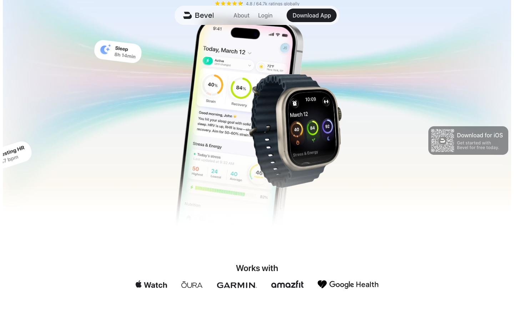
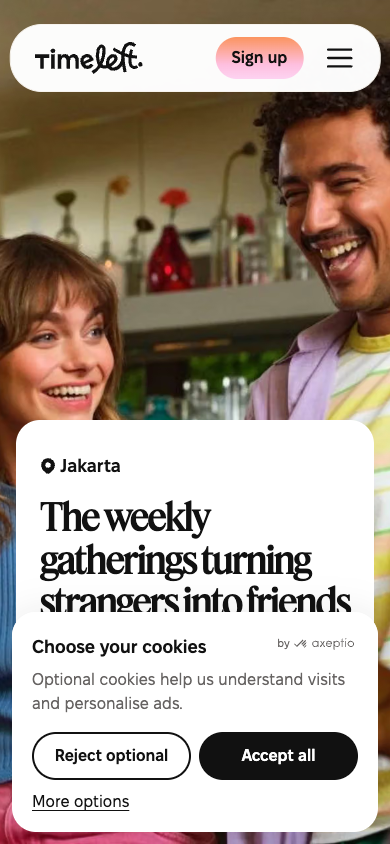

Review scaffolding · not part of the site
joinsprout.co hero: version 2, refined
Ahmad, 20 Nov, on version 2: the title on two lines like Bevel, no “Kiker families…” and “Free for parents” lines, real HTML screens in the phones so the Daily Brief plays its real motion, a working phone layout, and a second version where the photo is the hero’s background with a margin on every side. Update (same day): one phone only, the current Daily Brief (Figma Prod 16180:365329), coded, so the motion shows what it does: a teacher’s email becomes a to-do at the top of the list, Dana checks one off, then the day scrolls by. 2b (the photo behind everything) is the pick; 2a stays for comparison. Open a page full screen and move the pointer over it: the phone leans, the photo drifts.
The park behind everything · the photo as the background, inset
Open full page ↗Ahmad’s pick. The families photo fills the hero inside a rounded frame with a margin on every side; white title and button on a soft dark gradient. One phone: the current Daily Brief, coded, on a 16-second loop: (1) “New to-do from Miss Taylor’s email” arrives and drops in at the top of the To-Do List, (2) Dana checks off soccer pickup, (3) the brief scrolls through invitations, Happening today, upcoming events, lunch and birthdays. The pills say what each part does.
Phones over the park · the photo as a band
Open full page ↗Kept for comparison. The photo as a band under the phone, cream above. Same phone and motion as 2b.
Earlier today
The two references
Captured 20 Nov. Bevel: a crisp upright phone and watch, small data pills floating around them on a soft glow. Timeleft: a full-bleed photo of people, the headline on a cream card with the city on top.




The picnic, and the plan · Timeleft card + Bevel phone
Open full page ↗The families on the blanket fill the screen. The headline sits on a cream card with the place on top (Circle C · Austin), Timeleft’s way. The Daily Brief phone stands upright on the right with three pills floating around it: a to-do from the teacher’s email, a playdate invite, the class chat.
Rising from the park · Bevel layout, Timeleft photo
Open full page ↗Bevel’s structure: centered headline and button, the devices rising in the middle. Bevel pairs a phone and a watch; Sprout pairs the Daily Brief and the class chat. Where Bevel has a soft glow, the devices rise out of a wide photo of the families.
How this afternoon happened · the photo, and the chat that made it
Open full page ↗The photo full-bleed with the headline straight on it. The phone plays the class chat that made this afternoon happen: “Anyone at Brodie Park after pickup Saturday?”, three parents say yes, and it lands on four families’ calendars. It replays every few seconds.
The photo is the one already in the site’s assets. For the real site, a photo from an actual Kiker or Lincoln pickup or park day will carry this much better than any generated image.